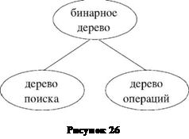

Деревья в программировании
Многие реальные объекты имеют иерархическую структуру, например, схема предприятия или структура власти в государстве, генеалогическое дерево семьи или родословная некоторого человека. Для представления таких объектов и обработки связанной с ними информации удобна организация данных, отражающая структуру объектов. Если абстрагироваться от конкретного содержания элементов, то получится математический объект, называемый деревом. Рассмотрим некоторые способы представления и обработки деревьев.
ПРЕДСТАВЛЕНИЕ ДАННЫХ С ПОМОЩЬЮ ДЕРЕВА
Данные, имеющие иерархическую структуру, удобно представлять с помощью деревьев. Дерево представляет собой конечное множество элементов, называемых узлами, или вершинами. Вершины расположены на разных уровнях иерархии. На самом высоком уровне иерархии (пусть номер этого уровня 1) располагается единственный узел, называемый корнем. Каждый узел, расположенный на i-ом уровне, связан на более высоком (i1)-ом уровне с единственным узлом, который является исходным, или предком для данного узла. Каждый узел i-ого уровня может быть связан с одним или несколькими узлами на более низком (i+1)-ом уровне. Такие узлы (i+1)-ого уровня называются порожденными узлами, или потомками. Узлы, не имеющие порожденных, называются листьями. На плоскости узлы удобно изображать точками, узлы i-ого уровня связывать дугами с порожденными узлами (i+1)-ого уровня. Примером дерева может служить генеалогическое дерево, в котором порожденными узлами являются сыновья. На рисунке 1 изображено лишь два поколения потомков Александра Невского: сыновья и внуки.
Можно построить генеалогическое дерево своей семьи, выбрав в качестве корня дерева, например, прадедушку. С помощью дерева можно представить родословную некоторого человека. В таком дереве каждый узел имеет два порожденных, например, левый узел хранит данные о матери, правый об отце. На каком-то уровне информация о родственниках безвозвратно утеряна.
На рисунке 2 изображено дерево, узлы которого помечены буквами. Корнем этого дерева является узел A. Это единственный узел, расположенный на самом высоком уровне иерархии. Порожденные корнем узлы: C, D, E. Узел A для узлов C, D, E является исходным. Узлы G, I, K, L, M, E не имеют порожденных узлов и являются листьями. На рисунке 3 изображены три дерева. Последнее дерево состоит лишь из одного узла корня E. Эти три дерева являются поддеревьями дерева, расположенного на рисунке 2. Корни этих поддеревьев связаны с единственным узлом A. Узел A расположен на более высоком уровне иерархии. Таким образом, порожденные узлы являются корнями поддеревьев данного дерева. При таком способе представления дерева достаточно иметь указатель на корень дерева для того, чтобы получить доступ к любой вершине дерева. Дерево можно определить как частный случай графа, а именно, дерево это связный граф без циклов. В [6] приведены примеры различных деревьев и способы их представления. Приведем рекурсивное определение дерева. Деревом называется конечное множество элементов D, состоящее из одного или нескольких элементов, удовлетворяющее условиям: 1. Есть один выделенный элемент, называемый корнем дерева. 2. Остальные элементы множества D содержатся в m попарно непересекающихся множествах D1, D2,..., Dm, каждое из которых является деревом. Деревья D1, D2,..., Dm являются поддеревьями выделенного корня.
Дерево, изображенное на рисунке 2, можно представить в виде совокупности множеств (рисунок 4). Элемент A корень дерева, остальные элементы содержатся в трех попарно непересекающихся множествах {C, G, I, K}, {D, L, M}, {E}. Каждое из множеств, в свою очередь, является деревом. Рассмотрим множество {C, G, I, K}. Элемент C корень дерева, остальные элементы содержатся в трех попарно непересекающихся множествах {G},{I},{K}, каждое из которых дерево, состоящее лишь из одного элемента корня. Если узлы изобразить точками на плоскости, а корни дерева связать с корнями поддеревьев, то получим изображение, как на рисунке 2. При работе с деревьями удобно определить пустое дерево как дерево, не содержащее узлов.
БИНАРНЫЕ ДЕРЕВЬЯ И ИХ ПРЕДСТАВЛЕНИЕ
Структуры данных и алгоритмы их обработки будут наиболее простыми в случае так называемых бинарных деревьев, то есть таких деревьев, каждый узел которых имеет не более двух порожденных узлов (левого и правого), и, соответственно, не более двух поддеревьев (левого и правого). На рисунке 5 представлены бинарные деревья. Деревья на рисунках 5в и 5г различны, так как в первом случае узел D является левым порожденным для C, а во втором правым порожденным для C. Один из способов представления деревьев применяется в случае, если известно, что каждый элемент дерева имеет не более k поддеревьев при небольшом значении k. Тогда можно включить в каждый элемент k указателей на поддеревья. Наиболее частый случай k = 2, при котором дерево называют бинарным, а два поддерева левым и правым, соответственно. При таком способе представления достаточно иметь лишь указатель на корень дерева, чтобы получить доступ к любому элементу, спускаясь вниз по ука- зателям. Отсутствующее дерево представ- ляется пустым указателем.
Узел дерева представляет собой запись, состоящую из трех полей, первое поле информационное, второе и третье указатели на левый и правый порожденные узлы (на корни ле- вого и правого поддеревьев). Если элемент име- ет тип node, то тип значения, называемого указателем на элемент node, записывается так: ^node. В разделе определения типов можно ввести синоним для типа ^node: tree=^node.
Описание типов данных для бинарного дерева может выглядеть так:
type
elem_tree = char; { Тип значения в узле дерева }
tree = ^node; { Указатель на узел дерева }
node = record { Узел дерева }
info : elem_tree; { Значение в узле }
left,right : tree { Ссылки на левое и правое поддеревья }
end;
Обратите внимание, что сначала идет определение типа tree, так как тип tree используется при описании полей left и right. Конструкция ^Z - единственный описатель типа, который может содержать еще не определенный в программе тип Z.
Если в программе переменная t будет описана так: var t: tree, то говорят, что t является указателем на элемент типа node. Переменная t может иметь значение nil. Это означает, что указатель не указывает ни на какой элемент.
Переменная, на которую установлен указатель, обозначается t^, в нашем случае t^ имеет тип node. Получить доступ к полям переменной t^ можно следующим образом: t^.info, t^.left, t^.right. Если в программе описаны две переменные p и q (var p,q: tree), то после выполнения оператора присваивания p:=q оба указателя p и q будут установлены на одну и ту же переменную, а именно на ту, на которую первоначально был установлен указатель q. Значение переменной типа указателя может измениться в результате выполнения оператора присваивания p:=nil. Значение переменной типа указателя может измениться в результате выполнения стандартной процедуры new(p), при выполнении которой выделяется память под значение типа node, и указатель p устанавливается на новый, созданный элемент с неопределенными значениями полей. Если память не может быть выделена, то значение p становиться равным nil. Выполнение оператора присваивания p^:= q^ приведет к тому, что, хотя указатели установлены на разные переменные, значения этих переменных одинаковы.
Основные алгоритмы обработки бинарных деревьев
При обработке деревьев удобно использовать рекурсию. Напомним, что при разработке рекурсивного алгоритма требуется обратить внимание на следующие моменты:
1. Определить параметры, от которых зависит решение задачи.
2. Решить задачу в тривиальном случае.
3. Свести задачу к ней самой, но с другими, более «простыми», параметрами.
Вычисление числа узлов бинарного дерева
При выбранном способе представления дерева для его задания достаточно иметь указатель на корень дерева, который и является единственным параметром. Если дерево пусто, то число его узлов равно 0. Это и есть решение задачи в тривиальном случае. Если же дерево не пусто, то число его узлов определяется как сумма числа узлов в левом поддереве и числа узлов в правом поддереве, увеличенная на единицу. Т.е. число узлов дерева можно определить рекурсивно следующим образом:
nnode(t)=1+nnode(tl)+nnode(tr),
где t - исходное дерево, tl, tr - левое и правое поддеревья. Таким образом, решение задачи о числе узлов дерева сведено к решению той же самой задачи, но уже применительно к поддеревьям данного дерева. В каждом из поддеревьев число узлов меньше, чем в дереве. Именно в этом смысле понимаются в данном случае более «простые» параметры. Опишем функцию, которая для бинарного дерева, заданного указателем на корень, определяет количество узлов в дереве.
function nnode( t: tree ): integer;
begin
if t=nil then
nnode := 0
else
nnode := 1 + nnode(t^.left) + nnode(t^.right)
end;
Задача 1.
1) Опишите рекурсивный алгоритм вычисления количества листьев бинарного дерева. В терминах генеалогического дерева это количество членов рода, не имеющих (или не имевших) сыновей. В терминах дерева родословной это те предки, про обоих родителей которых нам ничего не известно.
2) Опишите рекурсивный алгоритм вычисления количества ребер бинарного дерева. В терминах генеалогического дерева это число сыновей в роду, в терминах дерева родословной число известных предков.
ОПРЕДЕЛЕНИЕ ВЫСОТЫ ДЕРЕВА
Высотой дерева называется максимальный из уровней всех узлов дерева. Высота пустого дерева равна 0, высота дерева, состоящего лишь из корня, равна 1, высота дерева, изображенного на рисунке 6, равна 5. На рисунке 7 изображено дерево, где через A и B обозначены поддеревья, которые в общем случае могут быть и пустыми. При построении алгоритма можно рассуждать и так: как найти высоту дерева T, если известны высоты поддеревьев A и B? Для того чтобы найти высоту дерева T, надо взять максимальную из высот поддеревьев A и B и увеличить на 1.
Рекурсивно высоту бинарного дерева t опишем так:
h(t)=max(h(tl),h(tr))+1, h(null)=0, где t исходное дерево, tl, tr левые и правые поддеревья, null пустое дерево.
ПОИСК ЭЛЕМЕНТА В ДЕРЕВЕ
Рассмотрим решение задачи поиска элемента в дереве. При решении этой задачи используются два параметра, один параметр задает дерево, второй тот элемент, который требуется найти в дереве. Как и ранее, тривиальное решение будет в случае, когда дерево пусто. В таком дереве нет узлов, следовательно, нет интересующего нас узла. Если дерево не пусто, то исследуется корень дерева. Если элемент, расположенный в корне дерева, совпадает с заданным элементом, то задача решена. В противном случае поиск элементов следует производить в поддеревьях A и B (рисунок 7). Порядок просмотра поддеревьев произволен.
Уровень 1. Опишите рекурсивный алгоритм, определяющий число элементов в бинарном дереве, равных заданному.
Уровень 2. Напишите рекурсивную процедуру определения числа узлов, находящихся на заданном уровне.
Формат ввода:
Заданный уровень k. Количество узлов в дереве n.
- ЛП1 ПП1
- ЛП2 ПП2
n ЛПп ППп
Примечание. ЛП - ссылка на левое поддерево, ПП - ссылка на правое поддерево, пустые поддеревья обозначаются 0.
Формат вывода:
Число узлов на уровне k.
Пример.
Дерево изображено на рисунке 8.
ОБХОД ДЕРЕВА
Одна из распространенных задач при работе с деревьями - выполнение некоторого действия p с каждым элементом дерева. Часто такую задачу называют задачей обхода дерева. При работе с деревьями операций [7] приводились алгоритмы обхода, позволяющие по дереву операций получить префиксную и постфиксную нотацию формул.
В качестве примера приведем левосторонний обход дерева. При левостороннем обходе сначала полностью обходится левое поддерево корня (если поддерево существует), затем действие p применяется к корню дерева, а затем обходится правое поддерево. При этом поддерево обходится левосторонним способом, то есть описанный алгоритм является рекурсивным.
Опишем алгоритм нахождения всех узлов дерева, расположенных на i-ом уровне (i > 0). В этом случае задача имеет два параметра, один задает бинарное дерево, второй - номер уровня, на котором ищем вершины. Если дерево пусто, то вершин i-ого уровня в нем нет. Если же дерево не пусто и значение i равно 1, то элемент i-ого уровня - это корень дерева. Сведем решение задачи к ней самой, но с другими параметрами. Заметим, что все узлы i-ого уровня дерева t являются узлами (i -1)-ого уровня для левого и правого поддеревьев дерева t. Например, узлы D, E, F являются узлами третьего уровня для дерева на рисунке 6 и узлами второго уровня для левого и правого поддеревьев, изображенных на рисунке 9.
Уровень 2. После многих часов, проведенных в библиотеке, Виви составила свою родословную. Она получилась настолько обширной, что Виви запуталась в отношениях родства между своими предками. Помогите Виви разобраться в ее родословной. Для этого напишите программу, которая выписывает для двух предков Виви их отношение родства. Родословная задана бинарным деревом, причем для каждого человека в корне левого поддерева находится его мать, а в корне правого - отец.
Формат ввода:
n (количество узлов дерева без учета корня) имя 1 ЛП1 ПП1 имя 2 ЛП2 ПП2 ... имя n ЛПn ППn Имя предка 1 Имя предка 2
Формат вывода:
Отношение родства между предком 1 и предком 2.
Примечание. Для описания следует использовать только слова «мать, матери, сын, сына, отец, отца, дочь, дочери». Если имен, приведенных в примере окажется недостаточно, можно использовать следующие: Диди, Лулу, Зузу и т.д.) Дерево изображено на рисунке 10.
БИНАРНОЕ ДЕРЕВО ПОИСКА
Бинарное дерево удобно использовать для быстрого поиска данных. Будем считать, что элементы, которые будут организованы в бинарное дерево, снабжены числовым признаком, который назовем весом элемента. Элементы в дереве будем размещать таким образом, чтобы левое поддерево любого узла L содержало только те узлы, вес которых меньше, чем вес узла L, а правое поддерево - те узлы, вес которых больше или равен весу узла L. Такие деревья называют деревьями поиска или сортировки. На рисунке 11 изображено такое дерево.
Опишем алгоритм добавления элемента с заданным значением z в дерево поиска T. Сравнивается вес z с весом корня дерева T. Если вес z меньше, то элемент следует разместить в левом поддереве T, в противном случае - в правом. Далее поиск места для размещения элемента повторяется рекурсивно. Добавляемый элемент образует новый лист дерева.
При добавлении элементов со значениями 3 и 5 в дерево поиска, изображенное на рисунке 11, дерево примет вид, показанный на рисунке 12.
Опишем процедуру добавления в бинарное дерево поиска T элемента z. Считаем, что тип информационного поля элемента дерева - целый.
type elem_tree=integer;
procedure add_tree( var t: tree; z: elem_tree );
var p:tree;
begin
if t=nil then begin
new(t);
tA.info := z;
tA.left := nil;
tA.right := nil
end else
if z < tA.info then
add_tree(tA.left,z);
else
add_tree(tA.right,z)
end
При левостороннем обходе бинарного дерева поиска элементы дерева образуют возрастающую (строго говоря - неубывающую) последовательность, левосторонний обход дерева на рисунке 12 обеспечит обработку вершин в порядке: 2 3 3 4 5 5 6 7 8 9 10. При правостороннем обходе значения будут расположены в порядке убывания.
ПОИСК С ВКЛЮЧЕНИЕМ
При решении многих задач используется алгоритм, который получил название Поиск с включением. Согласно этому алгоритму элемент добавляется в дерево поиска лишь в тех случаях, если такого элемента в дереве не было. Таким образом, все элементы дерева различны.
Задача 4.
Уровень 1. Опишите два алгоритма (рекурсивный и нерекурсивный) поиска элемента с заданным весом в дереве поиска.
Уровень 2. Задана последовательность ненулевых целых чисел, число 0 - признак конца. Напишите программу, которая формирует последовательность чисел в порядке убывания, причем каждое число встречается в этой последовательности лишь один раз.
Указание. По заданной последовательности постройте дерево поиска, используя процедуру, реализующую алгоритм реализующую алгоритм поиска с включением. Затем осуществите правосторонний обход построенного дерева.
Формат ввода:
Последовательность натуральных чисел, завершаемая нулем.
Формат вывода:
Отсортированная в порядке убывания последовательность без повторений.
Пример.
Ввод: 2 9 8 6 2 8 5 0
Вывод: 9 8 6 5 2
Задача 5.
Рассмотрим задачу, которая является упрощенным вариантом задачи о частотном словаре. Вместо анализа слов некоторого текста, будут анализироваться числа некоторой последовательности.
Во входном потоке задана последовательность ненулевых целых чисел, число 0 считается признаком конца последовательности. Требуется написать программу, которая формирует две таблицы. В каждой из таблиц хранится число и количество его вхождений в последовательность. Первая таблица упорядочена в порядке возрастания чисел, вторая - в порядке убывания частот вхождения. Нам неизвестно количество различных чисел в последовательности, поэтому мы не знаем размера таблиц.
Можно поступить следующим образом: все числа последовательности организовать в бинарное дерево поиска. Для каждого числа проверять, встречалось ли оно ранее в последовательности. Если число встретилось впервые, то в дерево включить узел, одно из полей которого совпадает с числом, второе поле характеризует частоту вхождения и равно в данном случае 1. Если же рассматриваемое число уже в последовательности встречалось, то в дереве есть соответствующий этому числу узел. В этом случае узел надо найти и частоту вхождения увеличить на 1.
После просмотра всей последовательности будет построено дерево поиска, количество узлов которого равно количеству различных чисел в последовательности. С каждым числом хранится количество его вхождений в последовательность. Осуществляя левосторонний обход дерева, получим таблицу, числа в которой упорядочены по возрастанию. Рассмотрим последовательность чисел: 12 7 3 15 3 9 7 12 13 7 3 9 17 9 13 3 17 3 9 0. После просмотра всей последовательности будет построено дерево T, изображенное на рисунке 13. В каждом узле дерева первое число - элемент последовательности, второе число - частота вхождения в последовательность. При применении левостороннего обхода к построенному дереву T будут выведены значения, представленные в таблице 1.
Для того чтобы построить таблицу в порядке убывания частот, можно по дереву поиска построить дерево, элементы которого упорядочены по частоте вхождения, а затем применить к нему
Таблица 1
сновные определения
Существует довольно много равносильных определений деревьев, вот лишь некоторые из них.
- Дерево - это связный граф без циклов.
- Дерево - это связный граф, в котором при N вершинах всегда ровно N-1 ребро.
- Дерево - это граф, между любыми двумя вершинами которого существует ровно один путь.
Аналогичным образом определяется и ориентированное дерево - как орграф, в котором между любыми двумя вершинами существует не более одного пути.
Мы будем изучать и использовать только один частный случай ориентированных деревьев - корневые деревья (см. рис. 11.12).
Корневое дерево - это ориентированное дерево, в котором можно выделить вершины трех видов: корень, листья (другое их название: терминальные вершины) и остальные вершины (нетерминальные); причем должны выполняться два обязательных условия:
- из листьев не выходит ни одна дуга; из других вершин может выходить сколько угодно дуг;
- в корень не заходит ни одна дуга; во все остальные вершины заходит ровно по одной дуге.
Традиционно в математике и в родственных ей науках (в том числе и в теоретическом программировании) деревья "растут" вниз головой: это делается просто для удобства наращивания листьев в случае необходимости. Таким образом, на рисунках корень дерева оказывается самой верхней вершиной, а листья - самыми нижними.
Предок вершины v - это вершина, из которой исходит дуга, заходящая в вершину v. Потомок вершины v - это вершина, в которую заходит дуга, исходящая из вершины v. В этих терминах можно дать другие определения понятиям корень и лист: у корня нет предков, у листа нет потомков.
Бинарное дерево - это корневое дерево, каждая вершина которого имеет не более двух потомков. В таком случае иногда говорят о левом потомке и правом потомке для текущей вершины.
Высота корневого дерева - это максимальное количество дуг, отделяющих листья от корня. Если дерево не взвешенное, то его высота - это просто расстояние от корня до самого удаленного листа.
И в заключение мы приведем определение, связывающее произвольные графы с деревьями более плотно.
Каркас графа - это дерево, полученное после выбрасывания из графа некоторых ребер (см. рис. 11.13).
Примером каркаса является (корневое) дерево кратчайших путей от некоторой выделенной вершины (она будет корнем каркаса) до всех остальных вершин графа.

Мы рассмотрели бинарное дерево и алгоритмы работы с ним. Представленные нами алгоритмы анализировали, в основном, структуру дерева и, в меньшей мере, элементы, из которых дерево строилось.
Дерево поиска использовали для работы с данными, на которых задан порядок. Многие алгоритмы, описанные для бинарных деревьев, применимы и в случае деревьев поиска. Некоторые алгоритмы для дерева поиска были изменены. Поиск элемента в дереве поиска можно делать эффективнее, чем просто в бинарном дереве. Были добавлены новые алгоритмы, присущие только деревьям поиска: добавление элемента в дерево поиска, построение дерева поиска, поиск с включением и др.
Дерево операций использовалось для представления формул. Многие алгоритмы, описанные для бинарных деревьев, применимы и для деревьев операций, причем, для деревьев операций алгоритмы имеют свою интерпретацию. Например, поиск числа листьев в бинарном дереве можно трактовать как поиск операндов в дереве операций. Соответствующие обходы бинарных деревьев позволяют получать формулы в бесскобочной записи. Специфичными для деревьев операций являются алгоритмы: построение по формуле дерева операций, вывод формулы в инфиксной записи с необходимыми скобками, вычисление значения формулы, дифференцирование формулы, выполнение частичных преобразований и др.
Следуя технологии объектно-ориентированного программирования, можно создать объект «бинарное дерево», который является родителем двух других объектов: «дерево поиска» и «дерево операций». Потомки наследуют методы родителя. При необходимости методы родителя могут быть переопределены. Каждый потомок может иметь свои собственные методы. Объектно-ориентированное программирование - отдельная интересная тема, а мы заметим лишь, что и отношения между объектами отображаются с помощью дерева, например, изображенного на рисунке 27.
Литература.
- Вирт Н. Алгоритмы+структуры данных=программы. М.: Мир, 1985, 392 с.
- Дмитриева М.В., Кубенский А.А. Элементы современного программирования. СПб., 1991.
- Епанешников А., Епанешников В. Программирование в среде Turbo Pascal 7.0. М.,1993.
- Дмитриева М.В., Кубенский А.А. Турбо Паскаль и Турбо Си: построение и обработка структур данных. СПб., 1996.
- Касьянов В.Н., Сабельфельд В.К. Сборник задач по практикуму на ЭВМ. М., 1986.
- Черкасова П.Г. Компьютер и графы. Компьютерные инструменты в образовании, № 6, 1999 г.
- Дмитриева М.В., Поздняков С.Н. Формулы, формулы, формулы... Компьютерные инструменты в образовании, № 2, 2000 г.